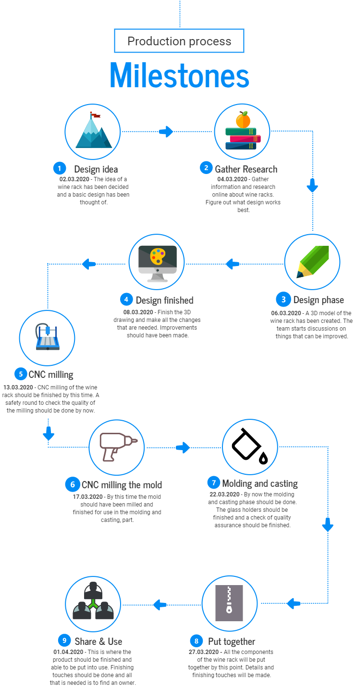

Final Project
My contribution
To see my contribution to the final project. Press this linkAbout this webpage
This webpage is my draft to the final project webpage. It was the first role assigned to me. However, Alexander took over this role and the real website to our final project can be found hereMy draft
The final project is a group project that is supposed to integrate some of the core subjects, as well as some 2D and 3D elements. The group is also supposed to determine an intellectual proberty licensing. The team consists of Aron, Alexander and Þorkell. The goals of this project are:
- Make a one-pager with the names of the team members, photo of the masterpiece and a brief description of the project
- Make a 3 minute video (1080p on youtube/vimeo) where the project is summarized
- Make a BOM (Bill of materials) for the project
- Link relevant sources from where the team got its inspiration
- Include a license
- Document the project
- Describe the project management progression and what the team eventually did not do
- Describe the spiral development, serial/parallel tasks, demand and supply chain management
- Acknowledge work done by others
The approach
The team decided to use project 4: Make something big and project 5: Molding and casting to supplement this project. In total, those two projects combined should cover the design and manufacture phases of the final project and that way the team is integrating course work into the project.Inspiration
The group decided in the beginning of the semester to create a modern wine rack. The first question the group wanted answers to was the following: Can I store my bottles upside down? The answer is: Orientation of the bottle makes little difference to the wine’s keeping qualities. That answer was provided by ScienceFocus in this articleThen the group went to the world wide web to find inspirations for wine rack designs. After a good meeting discussing different designs, the following design was chosen as an inspiration

Project Management
In the first two meetings, the group assigned simple tasks to the team members. Aron was in charge of early design drawings of the wine cabinet, Alexander set milestones and created a list of more detailed assignments that need to be handed out. Þorkell started working on the website and documenting the work done already.Alexander created the following milestones 
Early design drawings
Aron was in charge of the early design drawings. He started by creating a 2D sketch profile

The early design
To make the design more realistic Aron importing a cad drawing of a wine bottle from grabcad. It can be found here. After importing them into Inventor and making more changes our early design looks like this:
Bill of Materials
- Walnut: 900x100x10mm
- Oak: 285x100x20mm
- Plastic (moulding): 100x40x40mm
- Epoxy (casting): 2L
The workload
- 25. February: 30 minute meeting discussing ideas
- 27. February: 1 hour meeting, choosing a design, what two main ideas from the course to use. Assign tasks to team members.
- 1. March: 2 hours, Aron working on early designs, Þorkell creating the website foundation and Alexander working on the project management
- Total so far: 3 hours and 30 minutes